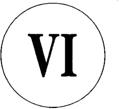
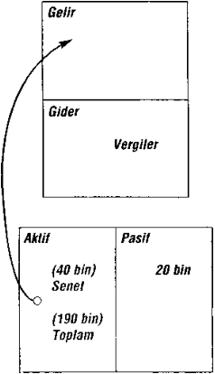
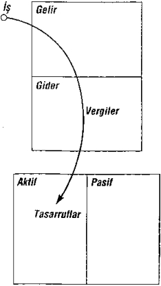

etmişlerdi.
Zenginler nasıl aydınlardan daha kurnaz oldular? ‘Zenginden al’ vergisi yasallaşınca, devletin kasalarına nakit akışı başladı. Başlangıçta halk mutluydu. Para devlet çalışanlarına ve zenginlere aktarıldı. Devlet memurlarına daha çok iş alanı açılmış ve emeklilik ikramiyeleri artmıştı. Zenginlerin kazancı, hükümetin fabrikalarına verdiği işin artmasıydı. Devlet geniş bir para havuzuydu artık, ancak sorun o paranın mali yönetimiydi. Paranın yeniden dolaşıma sokulması söz konusu değildi. Bir başka deyişle, devlet politikasına göre, eğer bir devlet bürokratıysanız, fazla para edinmekten kaçınmalıydınız. Size ayrılan form harcamada başarısız olursanız, bir sonraki bütçede bu hakkınızı kaybetme olasılığınız vardı. Kimse sizi yetenekli diye görüp övmezdi. Öte yandan işadamları için fazla paraya sahip olmak bir ödüldü, üstelik işbilir diye görülürlerdi.
Bu döngü içinde devletin harcaması büyüdükçe para talebi artmış ve ‘zengini vergilendir’ fikri düşük gelirlilere, yasaya Evet oyu veren yoksul ve orta sınıfa da uyarlanmıştı. Gerçek kapitalistler finans bilgilerini kaçış yolu bulmak üzere kullandılar. Bir şirketin korumasına yöneldiler. Şirket zengini korur. Ancak hiç şirket kurmamış birçok kimse şirketin gerçekten bir ‘şey’ olmadığını bilmez. Şirket, avukatlık bürosundaki devlet dairesine kayıtlı birtakım
151
downloaded from KitabYurdu.org
yasal belgeler içeren bir dosyadır adeta. Tepesinde adı yazılı büyük bina değildir. Ne bir fabrika ne de kişiler topluluğudur. Şirket ruhsuz bir tüzel kişilik yaratan yasal bir belgeden başka bir şey değildir. Zenginlerin serveti bir kez daha korunmuştu. Gelir vergisi yasalarla kalıcı hale getirilir getirilmez, şirketlerin yararları yeniden gündeme geldi, çünkü şirketlerin gelir vergisi oranı bireysel gelir vergisi oranından daha düşüktür. Buna ek olarak, daha önce belirttiğim üzere, belli harcamalar şirketin içinde vergi öncesi dolarlarla ödenir.
Sahip olanlarla olmayanlar arasındaki bu savaş yüzlerce yıldır süregelmekte. Bu, zenginlere karşı kalabalıkların ‘zenginden al’ savaşıdır. Her nerede ve ne zaman yasalar yapılıyorsa, bu savaş verilecektir. Sonsuza dek sürecektir. Buradaki sorun, bilgisiz olanların kaybedenler olmasıdır. Bunlar, her sabah kalkıp işe giden ve vergilerini ödeyenlerdir. Zenginlerin oynadıkları oyunun kurallarını anlasalardı, onlar da daha iyi oynayabilirlerdi. O zaman maddi bağımsızlıklarını kazanabilirlerdi. İşte bu nedenle, bir ebeveynin çocuğuna sağlam ve güvenceli bir iş bulabilmek için okula gitmesini salık verdiğini duyduğumda içim sızlar. Sağlam ve güvenceli bir işte çalışsa da mali yeteneklerden yoksun birinin kaçacak deliği yoktur. Bugün, ortalama bir Amerikalı vergilerini karşılamak
152
downloaded from KitabYurdu.org
için altı ay boyunca devlete çalışır ki yeterli birikimi olsun. Bence, bu çok uzun bir süre. Ne kadar çok çalışırsanız, devlete ödediğiniz miktar o kadar artar. İşte bu nedenle ‘zenginden alın’ fikri, oy vererek onu destekleyen kesime geri tep miştir.
Halk ne zaman zenginleri cezalandırmaya kalksa, zenginler boyun eğmez, tepki gösterir. Çünkü paraları, güçleri vardır ve olayları değiştirmeye kararlıdırlar. Öylece oturup vergi ödemeye razı gelmezler. Vergi yüklerini azaltmak için türlü yollar ararlar. Usta avukatlarla muhasebecileri işe alırlar, yasaları değiştirsinler, yasal kaçış noktaları yaratsınlar diye politikacıları ikna ederler. Değişiklikleri etkileme olanakları ellerin dedir.
Amerika Birleşik Devletleri’nin Vergi Yasası vergilerden kaçınmak için başka olanaklar da tanır. Bu olanaklara çoğu kimse ulaşamaz, kendi işlerine baktıkları için bunlar yalnızca zenginlerin görebileceği ayrıntılardır. Örneğin, ‘1031’ deyince kastedilen Devlet Geliri Yasası 1031 numaralı bölümdür, sermaye artırımı amacıyla daha pahalı bir gayrimenkul ile değiştirilmek üzere satıla n gayrimenkulün vergisini geciktirmede satıcıya açık kapı tanır. Gayrimenkul büyük bir vergi avantajına fırsat veren bir yatırım aracıdır. Değerini artırmak amacıyla değiş tokuş yaptığınız, elden çıkarmak üzere satmadığınız sürece
153
downloaded from KitabYurdu.org
kazancınızdan vergi ödemezsiniz. Yasaların tanıdığı vergi tasarrufundan yararlanmayan kesim, aktiflerini büyütme fırsatını kaçırır.
Yoksul ve orta sınıf aynı kaynaklara sahip değildir. Oracıkta oturur, devlet iğnelerinin kollarına saplanmasını ve damarlarına kan akıtmasını bekler. Vergi indiriminden yararlanmayıp giderek daha çok vergi veren kişilerin bu kadar çok olması beni şaşırtır; bunun tek nedeniyse devletten ödlerinin kopmasıdır. Vergi müfettişlerinin insanı nasıl ürkütebileceğim ve nasıl sindirebileceğini iyi bilirim, işyerleri kapatılıp lağv edilen arkadaşlarım var; üstelik bu sadece devletin hatasıydı. Bunları anlıyorum. Ancak bu sindirilmenin bedeli Ocak ayından Mayıs ortalarına kadar devlet için çalışmak olmamalı. Zavallı yoksul babam hiç karşı çıkmazdı. Zengin babam da. Ama İkincisi oyunu daha ustaca oynar, şirketlerini kullanarak bundan sıyrılırdı; işte zenginlerin en büyük sırrı budur.
Zengin babamdan öğrendiğim ilk dersi
hatırlıyorsunuzdur. Benimle konuşacak diye uzun süre oturup onu beklemek zorunda kalan dokuz yaşında bir çocuktum. Beni akıp. diye ofisinde çok oturup beklemişimdir. Beni özellikle bekletirdi. Böylelikle onun gücünü anlamamı ve bir gün aynı güce erişme isteğimi körüklemek isterdi. Hem okuyup hem de ondan çok şey
154
downloaded from KitabYurdu.org
öğrendiğim yıllar boyunca bana bilginin güç olduğu nu hatırlatmayı hiç eksik etmezdi. Ayrıca parayı tutmak ve ço - ğaltmak için gereken bilginin gücü daha da artırdığını anlatırdı. Bilgi olmaksızın dünyada oradan oraya savrul urdunuz. Zengin baba, en büyük üçkâğıtçının patron ya da müdür değil vergi müfettişi olduğunu da Mike’la bana anlatırdı. Eğer göz yumarsanız, vergi müfettişi hep daha fazlasını alır.
Para için çalışmak yerine parayı kendi adıma çalıştırma konusunda aldığım ilk ders aslında güçle ilgiliydi. Eğer para için çalışırsanız, güç işverendedir. Ama eğer para sizin için çalışırsa, gücü elinizde ve denetim altında tutarsınız. Paranın bizim için çalışmasından gelen gücü bize öğret - tikten sonra, finans kurdu olmamızı önermişti zengin baba. Yoksa üçkâğıtçılar tarafından sağa sola sürüklenirdik. Yasaları ve sistemin nasıl işlediğini bilmemiz gerekiyordu. Cahilseniz oraya buraya itilmeniz çok kolaydır. Neden söz ettiğinizi bilirseniz, karşı çıkma şansınız olur. Vergi kurnazı muhasebecilere ve avukatlara bol para ödemesi de bundan ileri geliyordu. Bu, devlete para ödemekten daha kârlıydı. Zengin babanın bana öğrettiği ve ömrüm boyunca kullanageldiğim ders şuydu: “Akıllı olursan kimse seni dilediği yere çekemez.” O yasaları bilirdi, çünkü yasaların dışına çıkmazdı. Yasaları bilirdi, çünkü yasaları bilmemenin
155
downloaded from KitabYurdu.org
bedeli ağırdı. “Haklı olduğunu bilirsen, savaşmaktan korkmazsın.” Karşınızda Robin Hood ve adamları olsa bile...
Yüksek öğrenimli babam bana güçlü bir şirkette iyi bir iş aramamı salık verdi hep. “Şirket basamaklarında alnının teriyle yükselmenin” erdemlerinden söz ederdi. Şirket sahibinden alacağını maaşa bağımlı olmakla her an sağılmaya hazır uysal bir inekten bir farkım olmayacağını anlamazdı.
Babamın öğüdünden zengin babama söz ettiğimde, güle - rek, “Neden kendi merdiveninin basamaklarında yükselme - yesin?” demekle yetinmişti.
Küçük bir çocukken, zengin babanın kendi işimin başın - da olmaktan ne kastettiğini anlamazdım. Bu fikir beni heyecanlandırsa da, yetişkinlerin gelecekte bir gün benim sahip olduğum bir şirkette çalışacağını gözümün önüne getiremeyecek kadar küçüktüm.
Önemli olan şu: Eğer zengin babam olmasaydı muhtemelen eğitimli babamın öğüdüne kulak verirdim. Zengin babamın düzenli hatırlatmaları sayesinde kendi şirketimi kurma fikri kafama yerleşti ve önüme bambaşka bir yol açtı. On beş ya da on altı yaşıma geldiğimde, eğitimli babamın önerdiği yolda ilerlemeyeceğimi biliyordum. Nasıl yapacağımı bilmiyordum ama sınıf arkadaşlarımın çoğunun
156
downloaded from KitabYurdu.org
gittiği yolu izlememeye kararlıydım. Bu karar yaş antımı değiştirdi.
Ancak yirmili yaşlarımın ortalarına geldiğimde zengin babamın öğütleri bir anlam ifade etmeye başladı. Deniz Piyade gücünden yeni ayrılmış, Xerox için çalışmaya başlamıştım. Çok para kazanıyordum, fakat maaş çekimi her elime aldığımda hayal kırıklığına uğruyordum. Kesintiler çoktu, ne kadar çok çalışırsam çalışayım maaşımdan o kadar çok gidiyordu. Başarım arttıkça, müdürlerim terfiden, zamdan söz ediyorlardı. Koltuklarım kabarıyordu kabarmasına, fakat zengin babamın dedikleri kulaklarımdan gitmiyordu: “Kim için çalışıyorsun? Kimi zengin ediyorsun?”
1974’te, bir yandan Xerox’ta çalışmayı sürdürürken ilk şirketimi kurdum ve ‘kendi işime bakmaya’ başladım. Aktif sütunumda birtakım değerler vardı, ancak onları daha da ar - tırmak için elimden geleni yapmaya kararlıydım. Bütün ke - sintilerine rağmen, aldığım o maaş çekleri zengin babamın öğütlerini anlamlı kılıyordu. Eğitimli babamın tavsiyelerini izleseydim, beni nasıl bir geleceğin beklediğini görebiliyor - dum.
Pek çok işveren, işçilerine kendi işlerine bakmayı öğütle - menin iş açısından olumsuz olduğunu düşünürler. Kimileri için bunun doğru olduğundan kuşkum yok. Ama bana göre,
157
downloaded from KitabYurdu.org
kendi işime odaklanmak, aktiflerimi geliştirmek beni daha iyi bir çalışan yapmıştı. Artık bir amacım vardı. İşe erke n gider, canla başla çalışır, gayrimenkul yatırımı yapmaya başlamak üzere olabildiğince çok para biriktirmek için didinirdim. Havvaii büyüyordu, edinilecek servetler vardı. Büyümenin eşiğinde olduğumuzu anladıkça daha çok Xerox ürünü sattım. Daha çok sattım, daha çok para kazandım; ama elbette maaşımdan kesintiler de arttı. Bu teşvik ediciydi. İşçi olma statüsünden bir an önce kurtulmak istediğim için, daha az değil daha çok çalışıyordum. 1978 yılında, satış bölümünün en
başarılı ilk beş kişisinden biriydim; birincilik de çoğu zaman bende olurdu. Fare yarışından çıkmaya fena halde istekliy - dim.
Üç yıldan daha kısa bir sürede, emlak komisyoncusu olan kendi küçük şirketimde Xerox’ta kazandığımdan daha çok para kazanmaya başlamıştım. Aktif sütunuma şirketimde kattığım para, fotokopi makineleri satmak için kapılan çalarak kazandığım para değil, benim için çalışan paraydı. Zengin babamın öğüdü daha da anlam kazanıyordu. Çok geçmeden gayrimenkullerimden gelen nakit akışı öyle fazlaydı ki, şirketim sayesinde ilk Porsche arabamı alabildim. Xerox’un satış ekibindeki iş
arkadaşlarım aldığım komisyonları harcadığımı
158
downloaded from KitabYurdu.org
sanmışlardı. Harcamadım. Komisyonlarımı aktiflere yatırı - yordum.
Param daha çok para yapmak için sıkı çalışıyordu. Aktif sütunuma giren her bir dolar harika bir işçiydi, işe daha çok eleman almak, vergi kesintisinden önceki dolarlarla patrona yeni bir Porsche satın almak için canını dişine takıyordu. Xerox’ta daha da çok çalışıyordum. Plan işliyordu; kanıtı da Porsche arabamdı.
Zengin babamdan öğrendiğim dersleri kullanarak erken yaşta ‘efsanevi fare yarışı’nın dışına çıkabilirdim. Onun verdiği derslerde edindiğim sağlam finans bilgileri sayesinde başaracaktım bunu. Finansal IQ adını verdiğim o finans bilgileri olmasaydı, ekonomik bağımsızlık yolunda attığım adımlar çok daha zorlu olurdu. Şimdi de verdiğim seminerlerde bu bilgiyi başkalarıyla paylaşabilmeyi umut ediyorum. Her konuşmamda katılanlara finansal IQ’nun dört uzmanlık alanından gelen bilgilerden oluştuğunu anlatırım.
1: Muhasebe. Ben buna finans bilgisi derim. Bir impara - torluk kurmak istiyorsanız bu becerinizin olması hayati önem taşır. Ne kadar çok paranın sorumluluğunu üstlenirseniz, o kadar titiz olmanız gerekir; yoksa her şey tepetaklak oluverir. Bunu denetleyen beynin sol tarafı, diğer bir deyişle ayrıntılardır. Finans bilgisi hesap ekstrelerini
159
downloaded from KitabYurdu.org
okumak ve anlamaktır. Bu yetenek herhangi bir kuruluşun güçlü ve zayıf noktalarını belirlemeye olanak tanır.
2: Yatırım. Para kazanma bilimi dediğim para kazanma yoludur. Stratejilerle denklemlerin bunda önemi büyüktür. Bunu denetleyense beynin sağ tarafı ya da yaratıcı yönüdür. 3. Piyasaları Anlama. Arz ve talep bilimidir. Piyasaların ‘teknik’ yönlerini bilmek gerekir, ki bu da canlandırılan duygulardır. 1996 Noel’inde Gıdıkla Beni Elmo bebekleri teknik ya da duygulara hitap eden bir pazar vakasıydı. Bir diğer piyasa faktörüyse yatırımın ‘temel’ ya da ekonomik anlamıdır. Yatırımın anlamlı olup olmadığı, daha doğrusu geçerli piyasa koşullarında anlam taşıyıp taşımadığı önemlidir.
Çoğu kimse yatırım yapma kavramlarıyla piyasaları anlamanın çocuklar için çok karmaşık olduğunu düşünür. Oysa çocukların bu konuları içgüdüsel olarak bildiklerini görmezler. Elmo bebeği bilmeyenler için belirteyim; bu bebek Noel’den hemen önce çocuklara sürekli tanıtılan bir Susam Sokağı karakteridir. Çocukların çoğu bir tane ister, Noel armağanı listelerinin ilk sırasında bu bebek vardır. Ana-babalar Noel boyunca reklam yapan üretici firmanın bebeği piyasadan özellikle çektiğinden kuşkulanır. Paniğe kapıldıklarından talep fazlalaşır, arz düşer. Mağazalarda satın alacak bebek kalmayınca umutsuzluğa kapılan ana -
160
downloaded from KitabYurdu.org
babaların paralarıyla küçük bir servet yapmayı hedefleyen fırsatçılara gün doğar. Şanssız olanlarsa Noel için başka bir oyuncak almak zorunda bırakılırlar. Gıdıkla Beni Elmo bebeklerinin inanılmaz popülerliği bana tamamen anlamsız geliyordu, ancak arz ve talep ekonomisine eşsiz bir örnek oluşturduğu da düpedüz ortada. Aynısı borsa, tahvil, gayrimenkul ve beysbol kartı piyasası için de geçerli.
4: Yasalar. Diyelim ki, muhasebe, yatırım ve piyasayla ilgili teknik becerilerle donanmış bir şirketin kazanımları hızlı büyümeye katkıda bulunur. Vergi avantajı bilgisi olan ve bir şirket kalkanı altında bulunan bir kimse başkası için çalışan birinden ya da yalnızca küçük işletme sahibi birinden çok daha süratle zengin olabilir. Bu, yaya giden biriyle uçakla yolculuk eden biri arasındaki farka benzer. Fark, uzun vadeli servet söz konusu olduğunda, çok büyüktür.
1. Vergi avantajları: Bir şirket bireyin yapabileceklerin den çok daha fazlasını yapabilir. Vergi ödemeden önce masrafları ödemek buna bir örnektir. Heyecan verici olan bir uzmanlık alanı olmasına rağmen, büyük mik tarda aktifleriniz ya da büyük bir işyeriniz olmadığı sü rece içine girmeniz gerekmez.
Çalışanlar kazanır ve vergi Öder, geriye kalanla yaşamaya çalışır. Şirket kazanır, kasasındakileri harcar ve
161
downloaded from KitabYurdu.org
geriye kalan miktar üzerinden vergi öder. Bu, zenginlerin başvurduğu en büyük yasal vergi kaçamaklarından biridir. İyi bir nakit akışı sağlayan yatırımlarınız varsa, kolay elde edilir ve pahalı değildir. Örneğin, kendi şirketinizle tatil gezilerinizi Havvaii’de yönetim kurulu toplantılarına dönüştürebilirsiniz. Otomobil ödemeleri, sigorta, tamir harcamaları şirket giderlerine dönüşür. Spor kulübü üyelik aidatınızı şirket gideri olarak gösterebilirsiniz. Lokantalarda yediğiniz yemek masraflarının çoğunu şirket harcamalarına katabilirsiniz. Bunun gibi daha pek çok avantaj sıralanabilir; ne var ki bunları vergi öncesinde yapmak gerekir.
2. Yasal davalardan korunma: Yaşadığımız kavgacı bir toplum. Herkes her attığınız adımdan kendine pay çı - karmakta. Zenginler servetlerinin çoğunu saklar, aktif - lerini alacaklılardan korumak için şirketler ya da vakıf lar gibi araçları kullanırlar. Birisi kalkıp da varlıklı biri ni mahkemeye verdiğinde, karşısına yasal koruma kal kanı dikilir ve çoğu kez o varlıklı kimsenin hiç malı mülkü yoktur. Zenginler her şeyin denetimini ellerinde tutarlar, ama malları mülkleri yoktur. Yoksul ve orta sınıf her şeye sahip olmaya çalışır ve bunları ya devlete ya da zenginleri mahkemeye vermeye bayılan kişilere kaptırır. Bu kişiler Robin Hood öyküsünden akıl almışlardır. Zenginlerden alır, yoksullara verirler.
162
downloaded from KitabYurdu.org
Bu kitabın amacı şirket sahibi olmanın inceliklerini sıralamak değil. Fakat şunu belirtmeden geçemem, eğer yasal aktifleriniz varsa, en kısa zamanda bir şirketin size sunabileceği yarar ve koruma kalkanlarını öğrenin. Konu hakkında yazılmış pek çok kitap bulacaksınız; şirket kurma aşamalarına baksanız bile bunların ayrıntılarını görürsü nüz. Özellikle de Inc. And Grow Ricb [Şirketleşin ve Zenginleşin] adlı kitapta şahıs şirketlerinin gücü çok iyi anlatılmaktadır.
Finansal IQ aslında pek çok beceri ve yeteneğin sinerjisidir. Ama bence, finansal zekânın temelini yukarıda sıraladığım dört teknik becerinin bileşimi oluşturur. Eğer büyük bir servet yapma arzusundaysanız, o zaman bu becerilerin bileşimi daha da öneır kazanır.
Özetle;
Şirket Sahibi Zenginler
1. Kazanır 2. Harcar 3. Vergi Öder Şirketlerde Çalışan Kişiler 1. Kazanır
2. Vergi Öder
3. Harcar
Bütün mali stratejinizin bir parçası olarak bizim
163
downloaded from KitabYurdu.org
önerimiz, aktiflerle donatılmış kendi şirketinize sahip olmanızdır.

DERS V
Zenginler Parayı B ulur
Dün gece yazı yazmaya ara verip Alexander Graham Bell adındaki genç bir adamın hayatı hakkında bir televizyon programı seyrettim. Bell telefonunun patentini henüz almıştı, ancak yeni icadına talep öyle çoktu ki başına ağrılar giriyordu. Daha büyük bir şirket gereksinimiyle, dönemin devi Western Union’m kapısını çaldı, patentini ve küçük şirketini onlara satmayı teklif etti. İkisine toplam 100
164
downloaded from KitabYurdu.org
bin dolar istiyordu. Western Union’m başındaki kişi onunla alay etti, istediği rakamın akıl almaz olduğunu söyleyerek reddetti. Gerisi tarih sayfalarında yazılı. Milyarlarca dolarlık bir endüstri çıkacaktı ortaya; o da AT&T gibi bir dev doğuracaktı.
Alexander Graham Bell öyküsünün hemen ardından ak - şam haberleri başladı. Haberlerde yerel bir şirketin küçülmeye gittiği anlatılıyordu. İşçiler öfkeliydi, şirket patronlarının adil olmamalarından yakınıyorlardı. İşten çıkarılan kırk beş yaşlarındaki bir yönetici, karısı ve iki çocuğuyla birlikte fabrika binasına gelmiş, işten çıkarılma kararını bir daha gözden geçirsinler diye patronlarla konuşabilmek için güvenlik görevlilerine türlü diller döküyordu. Kısa süre önce bir ev satın almıştı ve evin elinden gitmesinden korkuyordu. Kamera, bütün dünya görsün diye onun dil döküşüne odaklandı. Dik katimi çektiğini söylemeye gerek yok.
1984 yılından beri profesyonel olarak ders vermekteyim. Büyük bir deneyim ve onun sonucunda da ödül kazanmış bulunuyorum. Ama öğretmenlik aynı zamanda rahatsızlık verici bir meslek. Binlerce kişiye ders verdim; bundan öğrendiğim, ben de dahil olmak üzere hepimizin ortak bir yanı olduğu. Korkunç bir potansiyele sahibiz, hepimizin doğuştan gelen yetenekleri var. Ancak ilerlememizdeki
165
downloaded from KitabYurdu.org
engel teknik bilgiden yoksun oluşumuz değil, özgüven eksikliğimiz. Bu durum kimilerini ötekilerden daha çok etkiliyor.
Okulu bitirdiğimizde, aldığımız yüksek notların pek bir önemi olmadığını artık öğrenmişizdir. Akademik sınırların dışındaki gerçek dünyada iyi notlardan fazlası gereklidir. Kimilerinin buna ‘cesaret’, ‘cüret’, ‘saçına’, ‘küstahlık’, ‘kabadayılık’, ‘kurnazlık’, ‘yiğitlik’, ‘tuttuğunu koparmak’, ‘zekilik’, dediğini duyarım. Etiketi ne olursa olsun, bu etken kişinin geleceğini okulda alınan notlardan daha ço k belirleyi cidir.
Hepimizin içinde cesur, çok zeki ve tuttuğunu koparan olma özelliklerinden biri bulunur. Ama madalyonun bir de diğer yüzü var: İnsan gerekirse dizlerinin üstüne çöküp yal - varır da. Vietnam’da Deniz Piyadegücü’nde pilot olarak bir yıl geçirdikten sonra bu özelliklerin her ikisine de sahip olduğumu anlamıştım. Biri ötekinden daha iyi değil. Ancak öğretmen olarak yaptığım gözlemler sonucunda insan dehasını körelten en büyük etkenlerin korku ve
kendinden kuşku duymak olduğunu gördüm.
Öğrencilerimin yanıtları bilmelerine rağmen bunu söyleme yürekliliğini göstermediklerini izlemek acıydı. Gerçek dünyada, akıllı olanlar değil cesurlar ilerler.
Kişisel deneyimlerime dayanarak şunu söyleyebilirim;
166
downloaded from KitabYurdu.org
fınansal dehanız teknik bilgi kadar cesaret de gerektirir. Eğer korku oldukça güçlüyse, deha bastırılır. Derslerde öğrencilerime risk almayı, cesur olmayı, dehalarını kullanarak korkuyu güce dönüştürmeyi ve zeki olmayı öğrenmeye zorlarım. Kimilerinin aklı buna yatarken kimileri ürperir. Para söz konusu olduğunda çoğu kimse sağlam adım atmak ister. Şu sorularla çıkarlar karş ıma: Niçin risk alalım? Niçin finansal IQ’mu geliştirmeye zaman harcayayım? Niçin finans bilgim olmalı?
Yanıtım: “Daha çok seçeneğiniz olması için.” Önümüzdeki günler korkunç değişimlere gebe. Tam da genç mucit Alexander Graham Bell’den söz açılmışken, gelecek yıllarda onun gibilerin sayısı artacak. Her geçen yıl dünya çapında Bili Gates gibi birçok kişi olacak, Microsoft benzeri nice başarılı şirket mantar gibi bitecek. Ayrıca iflas eden, işçi çıkaran, küçülen pek çok şirket ortaya çıkacak. Peki finansal IQ’yu geliştirmeye zaman harcamanın gereği var mı? Bunun yanıtını yalnızca siz verebilirsiniz. Ancak kendi adıma konuşabilirim; ben buna zaman harcıyorum çünkü bu, hayatta olmanın en heyecan verici dönemi. Değişime karşı koymak yerine onu kabullenmeyi yeğlerim. Zam peşine düşmek yerine milyonlarca dolar kazanmanın düşünü kurarım. Yaşadığımız yıllar dünya tarihinde çok heyecanlı, eşsiz bir dönem. Bizden sonraki
167
downloaded from KitabYurdu.org
kuşaklar bu yıllara baktıklarında, ne kadar heyecan verici bir çağ yaşandığını görecekler. Bu, eskinin ölümü, yeninin doğuşu. Kargaşa dolu ve heyecan verici...
Peki finansal IQ’yu geliştirmeye neden zaman harcamak? Çünkü geliştirirseniz, refaha kavuşursunuz. Geliştirmezseniz, bu zaman periyodu heyecan yerine korku verici olacaktır. Binlerinin cesur atılmalarda bulunduğu bir dönemde, başkaları hayatın çürümeye yüz tutmuş halkalarına tutunurlar.
Uç yüz yıl önce toprak servetti. Dolayısıyla toprak sahibi kimse aynı zamanda servet sahibiydi. Derken fabrikalar ve üretim önem kazandı ve Amerika egemenliğe yükseldi. Serveti sanayiciler ele geçirdi. Bugün ise bilgi. En güncel bilgiye ulaşan kişi serveti ele geçiriyor. Sorun, bilginin dünyanın çevresinde ışık hızıyla dolaşmasından ileri gelmekte. Sınırlarla çevrili toprak ve fabrikaların tersine yeni serveti sınırlar ardına kapatmanın yolu yok. Değişim çok daha hızlı ve daha büyük boyutlarda yaşanacak. Yeni multimilyonerlerin sayısında muazzam bir artış görülecek. Elbette geride nal toplayanlar da olacak.
Günümüzde pek çok kişinin mücadele ettiğini, daha çok çalıştığını gözlüyorum; bunun tek nedeni eski fikirlere bağlı kalmaları. Kimilerinin işlerinden ya da evlerinden olduklarım biliyorum, suçu teknolojiye, ekonomiye ya da
168
downloaded from KitabYurdu.org
patronlarına attıklarım da. Sorunun kendilerinden kaynaklanabileceğini anlamamaları pek yazık. Eski fikirler onların en büyük pasifi. Yalnızca bir pasif, çünkü o fikirlerin ya da işlerin yürüme biçimi dün aktifti, oysa dün geçmişte kaldı.
Bir öğleden sonra kendi icat ettiğim, Cashflow , Nakitakışı adlı bir oyunu kullanarak yatırım yapmayı öğretiyordum. Arkadaşlardan biri sınıfa birini davet etmişti. Arkadaşın arkadaşı yeni boşanmıştı ve boşanma davasından fena halde zararlı çıkmıştı; şimdi de çözüm arayışına girmişti. Bu kadının arkadaşı da bizim derslerin ona yol gösterebileceğini düşün müştü.
Oysa oyun, paranın nasıl işlediğini öğretmek üzere tasar - landı. Oyunu oynarken gelir hesaplarıyla bilanço arasındaki etkilenmeyi öğreniyorsunuz. İkisi arasındaki nakit akışlarını ve servete giden yolun aktif sütununuzdan gelen aylık nakdi artırmak ve aylık harcamalarınızın üzerine geçmek için nasıl kıvrandığını da... Bunu öğrendikten sonra ‘fare yarışı’ndan kurtulup ‘ekspres yol’a çıkıyorsunuz.
Daha önce de belirtmiştim, kimileri bu oyundan nefret eder, kimileri çok sever, kimileriyse amacını anlamazlar. Bu bayan da bir şey öğrenmenin eşsiz fırsatını kaçırmıştı. İlk turda üstünde bir tekne resmi olan cicili bicili bir kart çekti. Sevinçliydi, “Oh, tekne sahibi oldum,” diyordu. Sonra,
1 69
downloaded from KitabYurdu.org
arkadaşı gelir hesaplarıyla bilançosundaki rakamların ne anlama geldiğini açıklamaya çalıştıkça, sevincin yerini öfke aldı, çünkü kadın matematikten nefret ediyordu. Arkadaşı gelir hesabı, bilanço ve aylık nakit akışı arasındaki ilişkiyi anlatırken masada bulunan diğer oyuncular bekliyorlardı. Derken, rakamların anlamım kavradığında, teknenin onu yiyip bitirdiğini anladı. Oyunun ileriki aşamalarında ‘küçülmek’ zorunda kaldı, bir de çocuğu oldu. Bayan açısından berbat bir oyundu.
Dersten sonra arkadaşı yanıma geldi, bayanın canının sıkıldığını söyledi. Sınıfa gelmesinin nedeni yatırım yapma konusunda bir şeyler öğrenmekti, ama saçma sapan bir oyuna bunca zaman harcamak zorunda bırakılmaktan hoşlanmamıştı.
Arkadaşı ona oyunda kendi yaşantısından kesitler, ‘yansımalar’ bulmasını önerdi. Bunu duyunca bayanın tepkisi parasını geri istemek oldu. Bir oyunun kendini yansıtması fikri ona göre saçmaydı. Verdiği para hemen kendisine iade edildi ve bayan kapıdan çıkıp gitti.
1984 yılından bu yana, okul sisteminin yapamadığını ya - parak milyonlarca dolar kazandım. Okulda öğretmenler söylev çeker. Öğrenciyken bunlardan nefret ederdim; kısa sürede sıkılır, dikkatim dağılırdı.
1984’te oyunlar ve simülasyonlar yardımıyla ders
170
downloaded from KitabYurdu.org
vermeye başladım. Her zaman, yetişkin öğrencilerime oyun oynarken öğrendikleriyle eski bilgilerini karşılaştırmalarını salık verdim. En önemlisi de oyunun kişinin davranışlarını yansıtmasıdır. Anında bilgiye dönüşen bir sistem. Öğretmenin size söylev çekmesi yerine, oyun sayesin de kendi dersinizi kendiniz alıyorsunuz: Üzerinize göre biçilmiş bir giysiden farksız.
Giden bayanın arkadaşı, daha sonra, beni olup bitenler - den haberdar etmek üzere aradı. Arkadaşının iyi olduğunu, sakinleştiğini anlattı. Sakinleşme aşamasında oyunla ke ndi yaşantısı arasında azıcık bir benzerlik kurabilmişti. Kocasıyla bir tekneleri olmamıştı, ama ondan başka akla gelebilecek her türlü ıvır zıvıra sahiptiler. Boşanmak onu öf - keden deliye döndürmüştü. Çünkü, birincisi, kocası onu daha genç bir kadınla aldatmıştı; İkincisi, yirmi yıllık evliliklerinin ardından aktif varlık olarak pek az birikimleri vardı. Dolayısıyla, boşanırken paylaşacak fazla mallan yoktu. Evli kaldıkları yirmi yıl boyunca çok eğlenmişlerdi ama birikimleri bir sürü cicili bicili eşyadan ibaretti.
Bayan öfkesinin, gelir hesabıyla bilançosunu karşılaştırırken rakamları anlamadığı için duyduğu utançtan kaynaklandığını fark etmişti. Eskiden hesap işlerinin erkeğin sorumluluğunda olduğunu düşünürdü. Kendisi evi çekip çevirir, konukları ağırlarken, kocası hesapları
171
downloaded from KitabYurdu.org
görürdü. Evliliğinin son beş yılında, kocasının kendisinden para kaçırdığından hiç kuşkusu kalmamıştı. Paranın nereye gittiğini takip etmediği için kendine kızıyor, ayrıca öteki kadının farkında olmamayı kendine yediremiyordu.
Tıpkı bu oyun gibi, dünyanın da bize gönderdikleri anın - da bilgiye dönüşür. Dikkatimizi verdikçe daha çok şey öğre - nebiliriz. Geçenlerde bir gün pantolonumun kuru temizleyi - ciden küçülmüş olarak geri geldiğinden yakınıyordum. Ka - rım gülümsedi, parmağıyla göbeğimi dürterek pantolonu - mun küçülmediğini, benim genişlediğimi ima etti.
Nakit akı fi oyunu İter oyuncuya kendine göre bilgiler öğretmek üzere tasarlanmıştır. Amacı, önünüze seçenekler koymaktır. Tekne kartını çekerseniz borca girersiniz, o noktada ne yapacağınız önemlidir. Kaç değişik seçenek düşünebilirsiniz? Oyunun amacı, oyuncuya düşünmeyi, yeni ve çeşitli mali seçenekler yaratmayı öğretmektir. Bugüne dek bini aşkın kişiyi oyunu oynarken izlemişimdir. Oyundaki ‘fare yarışı’ndan çabuk çıkanlar rakamları anlayan ve yaratıcı mali zekâsı olan kişiler oluyor. Onlar farklı mali seçenekleri anlamakta gecikmiyor. Çıkış yolunu bulmaları uzun zaman alanlarsa rakamlara aşina olmayan ve yatırım yapmanın gücünün farkında olmayanlar. Zengin kimselerin çoğu yaratıcıdır ve hesapladıkları riskleri alırlar.
172
downloaded from KitabYurdu.org
Nakit Akıp oynayarak oyunda çok para kazanan bazıları bu parayla ne yapacağını bilemez. Bunlar çoğunlukla gerçek yaşamda da maddi yönden başarılı değildir. Para onların elinde olsa da, hemen herkes onların bir adım ilerisinde gibidir. Çok paraya sahip olup da mali durumunu daha da iyileştirmeyen kimselerin sayısı hiç de az değildir. Seçeneklerinizi kısıtlamakla eski fikirlere saplanıp kalmak arasında hiçbir fark yok. Liseden bir arkadaşım, şimdi üç işte birden çalışıyor. Yirmi yıl önce sınıf arkadaşlarımız arasında en zengin olanımızdı. Bölgedeki şekerpancarı fabrikası kapatılınca, çalıştığı şirket de kapandı. Ona göre önünde tek bir seçenek vardı. Eski seçeneği: Çok çalışmak. Ama eski şirketindeki kıdemini dikkate alan eşdeğer bir iş bulamadı. Şimdi çalıştığı işler için fazla nitelikli; üstelik maaşı da düşük. Yaşamını sürdürmeye yeterli olanı kazanmak için üç işte bir den çalışıyor şimdi.
Nakit Akıp oynarken kimilerinin ‘doğru’ fırsatlar içeren kartların ellerine gelmediğinden yakındıklarını duyarım. Öylece otururlar. Gerçek yaşamda da bunu yapanları tanırım. ‘Doğru’ fırsatın önlerine çıkmasını beklerler. ‘Doğru’ fırsat kartını almalarına rağmen yeterince para
kazanamayanları da bilirim. Sonra kalkıp daha çok paramız olsaydı ‘fare yarışı’ndan kurtulabildik diye hayıflanırlar.
173
downloaded from KitabYurdu.org
Getirisi büyük olacak yatırımları görürler, ama paraları yoktur.
Bir de büyük bir fırsat kartı yakalayanlar var; yüksek sesle okurlar yazanı, gelgeldim büyük fırsatın ne olduğu hakkında en ufak bir fikirleri yoktur. Paraları vardır, zamanlama mükemmeldir, kart da ellerindedir, ancak fırsatın önlerinde durduğunu bir türlü göremezler. ‘Fare yarışı’ndan kaçış planlarıyla nasıl bağdaştıracaklarını anlayamazlar. Tanıdıklarım arasında böylelerinin sayısı diğerlerinin toplamından çoktur. Hayat boyunca bulunacak fırsat kapısı pek çok kişinin önünde öylece durur, ama onlar bunu göremezler. Bir yıl geçer, kendilerinden başka herkes para kazandıktan sonra durumu anlarlar.
Finansal zekâ yalnızca daha fazla seçeneğe sahip olmaktır. Eğer fırsatlar önünüze çıkmazsa, mali durumunuzu iyileştirmek için başka ne yapabilirsiniz? Eğer fırsat pat diye kucağınıza düşerse, ama paranız yoksa, banka da sizinle görüşmeyi bile kabul etmiyorsa, o fırsatı lehi nize çevirmek için başka ne yapabilirsiniz? Eğer varsayımınız yanlış çıkarsa, güvendiğiniz hesap öyle işlemezse, bir limonu milyonlarca dolara çevirmenin yolu nedir? Bu finansal zekâdır. Pek sık gerçekleşmese de bir limondan milyonlar kazanmak için kaç değişik mali çö züm düşünebildiğinizdir. Finansal sorunlarınızı çözmede ne
174
downloaded from KitabYurdu.org
kadar yaratıcı olduğunuzdur.
Pek çokları tek bir seçenek bilirler: Çok çalışmak, para biriktirmek ve ödünç almak.
Peki öyleyse, neden finansal zekânızı artırmak isteyesiniz ki? Çünkü kendi şansını yaratan kişilerden olmak istersiniz. Karşınıza ne çıkarsa çıksın, göğüsler ve durumu düzeltirsiniz. İnsanın şansını kendinin yarattığının farkına varanların sayısı bir avuç kadar. Paranın yaratılabileceğinin farkına varanlar da öyle. Daha şa nslı olmak ve çok çalışmak yerine parayı yaratmak istiyorsanız, finansal zekânın önemi büyüktür. ‘Doğru’ fırsatın gelmesini bekleyenlerdenseniz, uzun süre beklemeniz gerekebilir. Yola çıkmadan sekiz kilometre önce bütün trafik ışıklarının yeşil yanmasını beklemek gibi bir şey.
Küçükken, zengin baba Mike’la bana sürekli “Para gerçek değildir,” derdi. Daha ilk görüşmemizin ertesinde alçıdan ‘para yapmaya’ başlamakla paranın sırrını öğrenmeye ne kadar yaklaştığımızı hatırlatırdı bize sık sık. “Yoksul ve orta sınıf para için çalışır,” der ve eklerdi: “Zenginlerse para yaparlar. Paranın gerçek olduğunu düşündükçe, onu elde etmek için daha çok çalışırsınız. Para kavramının gerçek olmadığını ne kadar iyi kavrarsanız, o kadar çabuk zengin olursunuz.”
“Ne peki?” diye sorardık Mike’la. “Para gerçek değilse,
175
downloaded from KitabYurdu.org
ne?”
“Ne olmasını istersek, o,” olurdu zengin babanın yanıtı. Sahip olduğumuz en güçlü aktif zihnimizdir. İyi eğitilir - se, ânında büyük bir servet yaratabilir. Hem de 300 yıl önce krallarla kraliçelerin düşlerini süsleyen servetten çok fazlasını. Eğitimsiz zihne gelince, o kuşaklar boyu aileden aileye aktarılacak bir ömür boyu aşırı yoksulluk yaratır. Bilgi Çağı’nda para katlanarak artıyor. Bir avuç insan yoktan zengin oluyor, tek yaptıkları fikir satmak ve anl aşma yapmak. Yaşamlarını kazanmak için hisse senedi ya da başka yatırım türlerinin ticaretini yapanlara sorarsanız, bunu sık gördüklerini söyleyeceklerdir size. Bir anda hiçten milyonlarca para kazanılır. Hiç derken, hiç para alışverişi yapılmamasından söz ediyorum. Bu, anlaşmalar aracılığıyla gerçekleşir. Borsada bir el hareketiyle; Toronto’daki borsacının bilgisayarından gönderdiği bir mesajın Lizbon’daki bir başka borsacının bilgisayar ekranına yansımasıyla; hisseleri satmak için doğru ânın geldiğini bildirmek üzere komisyoncunun müşterisine telefon etmesiyle. Para el değiştirmez. Anlaşmalar yapılır.
Öyleyse finansal dehamızı geliştirmenin gereği niye? Bu soruya yanıtı siz vereceksiniz. Ben size ancak zekâmı neden bu alanda geliştirdiğimi anlatabilirim. Çünkü kısa zamanda
176
downloaded from KitabYurdu.org
zengin olmak istiyorum. Zengin olmak gerekmiyor, ama bu - nu istiyorum. Üstelik öğrenme süreci çok güzel geçiyor. Finansal zekâ düzeyimi geliştirmemin bir diğer nedeni de dünyanın en hızlı ve büyük oyununa katılma arzum. Kendi çapımda insanlığın öngörülmedik evriminde, insanların yal - nızca kafa emeğiyle çalışıp kol gücünü kullanmadıkları çağda ben de yer almak istiyorum. Ayrıca hareket burada. Olay bu. Moda bu. Korku veren bu. Hem de eğlenceli.
İşte bu nedenle finansal zekâma yatırım yap ıyor, elimdeki en güçlü varlığı geliştiriyorum. Çevremde gözünü hiçbir şeyden sakınmadan ilerleyen kimseler istiyorum. Geride kalıp nal toplayanların yanında yer almaya niyetim yok.
Size para yaratmakla ilgili basit bir örnek vereyim. 1990’ların başında Phoenix’in ekonomisi içler acısıydı. Televizyonda ‘Günaydın Amerika’ programını izlerken mali müşavir çıkageldi ve durumun vahametinden ve insana verdiği kasvetten söz etmeye başladı. Önerdiği ‘tasarruf idi. Her ay 100 doları bir kenara ayırırsanız, kırk yıl içinde multimilyoner olursunuz, diyordu.
Pekâlâ, her ay bir köşeye para atmak kulağa hoş geliyor. Seçeneklerden biri bu; çoğu kimsenin işaretlediği seçenek... Sorun şurada: Bu seçenek insanın gözünü gerçeklere kapatır. Kişi parasından daha çok para kazanmak için önüne
177
downloaded from KitabYurdu.org
çıkan büyük fırsatları kaçırır. Dünya onu sollar, gider. Yukarıda da belirttiğim üzere o dönemde ekonomi ber - battı. Yatırımcılar açısından bu durum eşsiz piyasa koşulları demektir. Paramın bir bölümü borsada ve apartman dairele - rinde yatıyordu. Nakte sıkışıktım. Herkes elindeki avucundakini satıp savdığı için onları satın alıyordum. Yatırım yapıyordum. Süratle yükselen borsada karımla benim için işleyen bir milyon dolardan fazla nakit paramız vardı. Yatırım yapmak için bulunmaz bir fırsattı. Ekonomi berbattı. Bu küçük fırsatları görmezden gelemezdim.
Bir zamanlar 100 bin dolara satılan evler 75 bine düşmüştü. Ama emlak bürosunda alışveriş yerine, icra- iflas avukatlarının bürolarında ya da mahkeme basamaklarında alışverişe başladım. Bu alışveriş mekânlarında 75 bin dolarlık evi 20 bin dolar ya da daha altında bir fiyata almak mümkün oluyordu. Doksan günlüğüne 200 dolar faizle bir arkadaşımdan aldığım 2 bin dolar borçla avukatlık bürosuna evin depozitosunu ödemiştim. Satış işlemleri süre rken gittim, 75 bin dolarlık evi 60 bin dolara hiç ön ödemesiz satılığa çıkardığıma dair gazete ilanı verdim. Telefon susmak bilmiyordu. Alıcı adaylarının mali durumları incelendikten ve tapu devrini üzerime aldıktan sonra, olası alıcılara evi gezdirdim. Hepsi çılgına dönmüş gibiydi. Birkaç dakika içinde evi satmıştım. Gerekli işlemleri
178
downloaded from KitabYurdu.org
başlatmak için 2500 dolar istedim, parayı aldıktan sonra geri kalanı yediemin ve tapu dairesi tarafından yürütüldü. Arkadaşımdan aldığım 2 bin doları 200 dolar fazlasıyla geri ödedim. O mutluydu; evi alan da avukat da, ben de. Bana 20 bin dolara mal olan bir evi 60 bin dolara satmıştım. 40 bin dolar alıcıdan aldığım senet karşılığı olarak aktif sütunuma girmişti. Oysa bütün bunlara topu topu beş saat zaman harcamıştım.
Eğer finansal bilginiz varsa ve rakamları
okuyabiliyorsanız, size bu işlemin neden para yaratmaya örnek olduğunu göstereceğim.
Vergisiz nakit aktif sütununda ortaya 40 bin dolar çıkardı. Yüzde 10 faizle. Yılda 4 bin dolar nakit akışı ya rattınız.
179
downloaded from KitabYurdu.org

Piyasaların sıkışık olduğu bu dönemde, karımla ben boş zamanlarımızda böyle altı basit alışveriş yaptık. Paramızın büyük bölümünü daha büyük gayrimenkullere ve borsaya yatırmış olmamıza rağmen, altı tane satın al, yarat ve sat işleminde 190 bin dolardan fazla (senetlere yüzde 10 faiz uygulandı) aktif yaratmıştık. Bu yılda yaklaşık 19 bin dolar gelir demekti, onu da özel şirketimize aktardık. O 19 bin doların çoğu şirket arabalarını, onlara konan benzini, çıktığımız yolculukların faturalarını, sigorta poliçe lerini, müşterilerle birlikte yediğimiz akşam yemeklerini ve daha başka harcamaları karşılıyor. Devlet o geliri vergilendirme
180
downloaded from KitabYurdu.org
aşamasına gelene dek vergi öncesi harcamalarımızı yasal olarak yapmış bulunuyoruz.
Tasarruflar
40 bin dolar tasarruf etmek ne kadar sürer ve yüzde 50 vergi oranıyla maliyeti nedir?

Finansal zekâyla paranın nasıl icat edildiğine, nasıl yaratıldığına ve nasıl korunduğuna basit bir örnekti bu. Kendinize bir sorun, 190 bin dolar biriktirmek ne kadar sürer? Banka paranıza yüzde 10 faiz öder mi? Senet otuz yıl boyunca geçerli. Dilerim bana 190 bin dolar asla ödemezler.
181
downloaded from KitabYurdu.org
Eğer bana anaparayı öderlerse, vergi ödemek zorunda kalı - rım, üstelik otuz yıl boyunca ödenen 19 bin dolar gelir ola - rak 500 bin dolardan biraz daha fazla.
Kişi ödeme yapmazsa ne olur, diye sorarlar. Öyle de oldu, ama iyi oldu. Phoenix emlak piyasası 1994’ten 1997 yılına kadar ülkenin en kaynar kazanıydı. O 60 bin dolarlık ev geri alındı, bu kez 70 bin dolara satıldı, kredi işlemleri karşılığında 2 bin 500 dolar daha kazanıldı. Yeni alıcının gözünde yine düşeş bir alışverişti. Süreç böylece tekrarlanabilir.
Uyanıksanız fark etmişsinizdir, evi ilk sattığımda aldığım 2 bin dolar borcu geri vermiştim. Teknik olarak işleme hiç para koymadım. Yatırımın getirisiyse (YATGET) sonsuz. İşte hiç parasız çok para kazanmaya bir örnek...
İkinci işlemde, ev yeniden satıldığında cebime 2 bin dolar koyup kredi borcunu otuz yıla yayabilirdim. Eğer para kazanmam için bana para ödenseydi YATGET ne kadar olurdu? Bilmiyorum, ama ayda 100 dolar -daha doğrusu 150 dolar çünkü kırk yıl boyunca yüzde 5’ten hesaplarsak, vergi sonrası gelirden söz ediyoruz ve daha sonra bir kez daha yüzde 5 vergilendirilme söz konusu- tasarruf etmekten daha cazip olduğuna kuşku yok. Bu yolu seçmek hiç de akıllıca değil. Daha güvenli olabilir ama zekice değil.
182
downloaded from KitabYurdu.org
Bugün, 1997 yılında ben bu kitabı yazarken, piyasa koşulları beş yıl öncesinin tam tersi yönde. Phoenix’deki emlak piyasası Amerika Birleşik Devletleri’nin gıptayla baktığı bir yer. 60 bin dolara satılan evlerin değeri şimdi 110 bin dolar. Ucuza kapatılacak ipotekli evler meveut, ancak bu kez maliyet daha yüksek, çünkü gidip onları aramak için zaman ayırmam gerek. Ender fırsatlar bunlar. Binlerce alıcı böyle kelepir evlerin peşinde, ama bunları mali yönd en anlamlı kılacakların sayısı çok az. Piyasa değişti. Şimdi harekete geçip aktif sütununa eklenecek başka fırsatlar arama zamanı.
“Burada işe yaramaz”, “Yasalara aykırı”, “Uyduruyor - sun.”
“Nasıl yapıldığını bana gösterebilir misin?” sorusundan çok duyarım bu yorumlan.
Hesap ortada. Cebir ya da hesap bilmeye gerek yok. Çok fazla yazıp çizmeme gerek kalmıyor, ne de olsa yasal işlemleri ve ödeme anlaşmalarını komisyoncu yürütür. Ne aktaracak damım ne de sifonu çekilecek tuvaletlerim var, çünkü bu da ev sahiplerinin işi. Ev onların. Arada bir taksitini ödemeyenler çıkar. Harikulade, çünkü gecikme faizi gelir ya da tası tarağı toplayıp evden çıkarlar ve ev yeniden satılır. Buna mahkeme düzeni el atar.
Sizin oturduğunuz yerde işlemeyebilir. Piyasa koşulları
183
downloaded from KitabYurdu.org
farklı olabilir. Ne var ki bu örnek basit bir mali işlemin nasıl yüz binlerce dolar para çıkarabileceğini gözler önüne ser - mekte; hem de çok az para ve düşük riskle. Paranın salt bir anlaşma olarak yer almasına bir örnek bu. Lise mezunu her - kesin üstesinden gelebileceği bir iş.
Yine de çoğu kimse bunu yapmaz. Onlar basmakalıp “çok çalış ve tasarruf et” öğüdüne kulak verirler.
Otuz yıllık bir çalışmanın karşılığı olan 190 bin dolar aktif sütununa aktarılmış bulunuyor, hem de hiç vergi ödenmeden.
Şimdi, size hangisi daha zor geliyor?
1. Çok çalış, yüzde 50 vergi öde ve kalanı tasarruf et. Bi - rikimlerin yiizde 5 kazansın, bir de bundan vergi ver. Ya da
2. Finansal zekânı geliştirmeye zaman ayır ve hem
beyin gücünü hem de aktif sütununu donat.
1 No’lu seçeneği izlerseniz, buna 190 bin dolar tasarruf etmek için ne kadar zaman ayırmanız gerektiğini ekleyin bir de; ne de olsa zaman en büyük değerlerinizden biri.
Belki şimdi bir ebeveyn, “Çocuğum okulda başarılı, iyi bir eğitim görüyor,” dediğinde neden onu onaylamadığı mı anlarsınız. İyi olabilir ama yeterli mi?
Yukarıdaki yatırım stratejisinin küçük çaplı olduğunu
biliyorum. Amaç, küçük bir şeyin büyüğe
184
downloaded from KitabYurdu.org
dönüştürülebileceğini göstermek. Bir kez daha belirteyim, başarım güçlü bir maddi temelin önemini yansıtır, bu da sağlam bir finansal eğitim gerektirir. Bir kez daha tekrarlamakta yarar var: Finansal zekâ dört teknik beceriden oluşur:
1. Finansal, diğer deyimiyle mali bilgi. Rakamları okuma yeteneği.
2. Yatırım stratejileri. Para kazanma bilimi.
3. Piyasa. Arz ve talep. Alexander Graham Bell piyasanın istediğini vermişti. Bili Gates de öyle. 20 bin dolara mal olan 75 bin dolarlık bir evin 60 bin dolara alıcı bulması piyasanın yarattığı fırsatı değerlendirmenin so nucuydu. Birisi satın alırken, bir başkası satıyordu.
4. Yasalar. Muhasebe, şirket, devlet kurallarını ve yönet - meliklerini bilmek. Ben kuralların dışına çıkmamayı öneririm.
İster küçük evler, büyük apartman daireleri, şirketler satın alarak, ister hisse senetleri, tahviller, şirket hisseleri, değerli taşlar, beysbol kartları, servet arayışında başarılı olması gereken bu basit temeldir ya da bu becerilerin bileşimidir.
1996 yılına gelindiğinde, emlak piyasası eski haline dönmüş, herkes piyasaya giriyordu. Borsa hızla yükseliyordu ve borsaya girmeyen yoktu. Amer ikan
185
downloaded from KitabYurdu.org
ekonomisi yeniden ayaklarının üstünde durmaya başlamıştı. Bense 1996’da satmaya başladım; Peru, Norveç, Malezya ve Filipinler’e seyahat ediyordum. Yatırımların niteliği değişmişti. Gayrimenkul piyasasında mülk satın almayı bıraktık. Şimdi aktif sütununun yukarı doğru yükselmesini izlemekle yetiniyorum. Bu yıl içinde yeniden satmaya başlarım herhalde. Bu biraz da Meclis’ten geçecek yasa değişikliklerine bağlı. Şu altı evden bazılarını satmayı, 40 bin dolarlık senedi de nakite çevirmeyi düşünebilirim. Muhasebecimi arayıp nakit işine hazır olmasını ve parayı güvence altına almanın yollarını aramasını istesem iyi olur. Vurgulamak istediğim nokta şudur: Yatırımlar gelir, gi - der, piyasalar yüksek ve düşük seyreder, ekonomiler iyileşir ve çöker. Dünya her an hayatın fırsatlarını önünüze serer, hem de her gün; ne var ki biz bunları gözden kaçırabiliriz. Oysa oradadırlar. Dünya değiştikçe, teknoloji ilerledikçe, sizi ve ailenizi birkaç kuşak boyunca mali açıdan güvenceye alacak daha çok fırsat çıkacaktır.
Öyleyse neden finansal zekânızı geliştiresiniz? Buna tek yanıtı siz verebilirsiniz. Ben öğrenmeyi ve kendimi geliştir - meyi neden bırakmadığımı biliyorum. Bunu sürdürmemin nedeni değişimin kapıda olması. Geçmişe takılı kalmaktansa değişimi kucaklamayı yeğlerim. Piyasada hızlı büyümeler ve çöküşler yaşanacağının farkındayım. Finansal
186
downloaded from KitabYurdu.org
zekâmı sürekli geliştirmek istememin nedeni, her piyasa değişikliğinde dizlerinin üstüne çöküp işten atılmamak için yalvaracak kişiler olacağını bilinenidir. Diğer yandan, kimileri hayatın kendilerine sunduğu limonları alacak ve onlardan milyonlar kazanacaklar - arada sırada hepimizin eline verilir bu limonlardan. İşte finansal zekâ budur. Kişisel olarak mali büyümeyi başarmak için iki ana araç kullanmaktayım: Gayrimenkul ve küçük hisse senetleri. Gayrimenkulla' temel oluyor. Bir gün alıp ertesi g ün satarken, bu gayrimenkullerle nakit akışını sağlıyor ve önüme çıkan para kazanma fırsatını değerlendirmiş oluyorum. Düşük değerli hisse senetleri hızlı büyüme için kullanılıyor.
Kendi yaptıklarımı kimseye salık verdiğim yok. Yukarıda sıraladıklarım yalnızca örnekten ibaret. Eğer önüme çıkan fırsat çok karmaşıksa ve yatırımın niteliğini anlamıyorsam, o zaman işe girmiyorum. Mali yönden iyi durumda olmak için bana tek gereken basit matematik ve sağduyu.
Bu örnekleri vermemin beş nedeni var:
1. İnsanları daha çok şey öğrenmeye teşvik etmek.
2. Eğer temel sağlamsa işin kolay olacağım öğretmek. 3. Herkesin büyük bir servet elde edebileceğine göster mek.
187
downloaded from KitabYurdu.org
4. Amaca ulaşmanın milyonlarca yolu olduğuna işaret et - mek.
5. Bunun roket ilmi olmadığını kanıtlamak.
1989 yılında, Oregon eyaletinin Portland şehrinde hoş bir ortamda koşuya çıkardım. Süslü küçük evlerin bulunduğu bir banliyö semtiydi. Minicik ve sevimliydiler. Kırmızı Şapkalı Kız o evlerin birinden çıkıp ninesinin evine doğru her an yola koyulabilirdi.
Her yerde ‘Satılık’ tabelaları asılıydı. Kereste piyasası berbat durumdaydı, borsanın ibresi tepetaklak aşağı gidiyordu ve ekonomik kriz vardı. Sokağın birinde gözüme çarpan bir satılık tabelasının ötekilerden daha uzun süredir orada durduğu dikkatimi çekti. Eski kılıklı bir evdi. Koşuya çıktığım bir gün yolda ev sahibiyle karşılaştım, canı sıkkın görünüyordu.
“Eve kaç para istiyorsunuz?” diye sordum.
Ev sahibi belli belirsiz gülümseyerek bana döndü. “Siz bir fiyat verin,” dedi. “Satışa çıkaralı bir yıl oldu. Gelip bakanlardan ses seda çıkmadı.”
“Bir göreyim,” dedim ve yarım saat sonra evi satış fiyatı - nın 20 bin dolar altına satın almıştım.
İki yatak odalı sevimli bir evdi, bütün pencer elerinde şatafatlı süslemeler vardı. Gri bordürlerle çevrili açık maviye boyanmış evin yapım tarihi 1930’du. İçeride şahane
188
downloaded from KitabYurdu.org
bir taş şömine yer alıyordu. İki yatak odası da kutu gibi ufacıktı. Kiralamak için ideal bir evdi.
Ev sahibine 5 bin dolar kaparo verdim ve 65 bin dolar değerinde olan ancak kimsenin satın almaya yanaşmadığı evi 45 bin dolara almak üzere anlaştık. Bir hafta sonra evi boşaltan ev sahibi serbest kaldığı için sevinçliydi. Derken ilk kiracım eve taşındı; yerel bir yüksekokulda profesördü . Kesinti, harç ve öteki masraflardan sonra her ay cebime giren para 40 doları bile bulmuyordu. Hiç de heyecan verici bir alışveriş sayıl mazdı.
Bir yıl sonra Oregon’daki durgun emlak piyasası toparlanmaya başlamıştı. California’dan gelen, paraya doymuş yatırımcılar, kendi emlak piyasaları hâlâ hızla büyümekte olmasına rağmen, kuzeye yönelmiş, Oregon’da, Washington’da gayrimenkullar satın alma peşine düşmüşlerdi.
California’dan gelen genç bir çift o küçük evi benden 95 bin dolara satın aldığında neredeyse bedavaya getirdik diye sevinç içindeydiler. Yaklaşık 45 bin dolarlık kazancım 1031 no’lu vergi yasası gereğince yer değiştirdi, ben de kalkıp pa - ramı neye harcayacağımı aramaya başladım. Aşağı yukarı bir ay sonra, Orcgon’ın Beaverton şehrinde bulunan In tel fabrikasının hemen bitişiğinde 12 daireli bir apartman buldum. Sahipleri Almanya’da yaşıyorlardı ve binanın
189
downloaded from KitabYurdu.org
değerinin ne olduğu hakkında en ulak bir bilgileri yoktu; ondan kurtulmaya can atıyorlardı. 450 bin dolarlık binaya 275 bin dolar fiyat teklif ettim. 300 bin dolara anlaştık. Orayı satın aldım ve iki yıl boyunca elimde tuttum. Yine 103 Fin değişim işleminden yararlanarak, binayı 495 bin do lar karşılığında sattık ve Arizona’nın Phoenix kentinde otuz daireli bir başka apartman satın aldık. Çünkü o arad a yağmurdan kurtulmak için Phoenix’e taşınmıştık, zaten orayı satmamız gerekiyordu. Daha önceki dönemlerdeki Oregon piyasası gibi Phoenix’dcki emlak piyasası da krizdeydi. Otuz daireli apartmanı 225 bin dolar altına, 875 bin dolara satın aldık. Otuz dairenin aylık getirisi yaklaşık 5 bin dolardan biraz fazlaydı. Derken Arizona piyasası hareketlenmeye başladı ve 1996’da Colorado’dan gelen bir yatırımcı o bina için bize 1.2 milyon dolar fiyat teklifi verdi. Karımla düşündük, taşındık ve Meclis’ten çı kacak sermaye kazanmalarıyla ilgili yasa değişikliğini beklemeye karar verdik. Eğer yasa değişecek olursa, gayrimenkulün değeri yüzde 15-20 artabilirdi. Hem ayda 5 bin dolarlık kira geliri hiç de fena sayılmazdı.
Bu örneği vermekteki amacım küçük rakamların nasıl büyüyebileceğini göstermek. Finans özetlerini, yatırım stratejilerini, piyasayı ve yasaları anlamanın önemi, burada kendini belli eder elbette. İnsan bu konulara yabancıysa, o
190
downloaded from KitabYurdu.org
zaman daha güvenli olan yoldan gidip basmakalıp kaideye kulak vermeli ve yalnızca sağlam yatırımlara yönelmeli. Ancak ‘güvenli’ yatırımların çoğu sağlam ve yavaş adımlarla ilerler. Diğer bir deyişle, öyle sağlamdırlar ki kazandırdıkları da yavaş bü yür.
Büyük komisyoncular hem kendilerini hem de müşterilerini korumak adına, ellerindeki evleri spekülatif işlemlere sokmazlar. Akıllıca bir politika izlerler.
Para kazandıracak gerçek anlaşmalar piyasanın acemi alıcılarına önerilmez. Zenginleri daha da zengin kılacak en iyi anlaşmalara, oyunu bilenlere ayrılır. ‘Yeterli’ görülmeyen birine böyle spekülatif alımlar önermek teknik olarak yasal değildir, ama bunun yapıldığı da olur elbet. Sözde ‘yeterli’ oldukça önüme çıkan fırsatlar da artıyor. Yaşamınız boyunca finansal zekânızı geliştirmenin diğer bir yolu da size daha çok fırsat sunulmasıdır. Finansal zekânız ne kadar çoksa anlaşmanın iyi olup olmadığını anlamanız kolaylaşır. Kötü bir anlaşmayı fark edecek olan ya da aleyhinize işleyecek gibi görülen bir anlaşmayı lehinize çevirecek olan yine zekânızdır. Öğrendikçe -öğrenecek pek çok şey varken- daha çok para kazanırım, çünkü yıllar geçtikçe deneyimim ve bilgim artar. Oyunu daha sağlam oynayan arkadaşlarım var, işlerinde canla başla çalışırlar ama finansal akıl geliştirmekten uzaktırlar; bu zaman
191
downloaded from KitabYurdu.org
gerektirir.
Genel felsefem aktif sütunuma büyüyecek tohumlar ek - mek. Formülüm bu. Küçük adımlarla işe başlayıp tohumlar saçarım. Kimi büyür; kimi büyümez.
Emlak şirketimiz birkaç milyon dolar değerinde gayrimenkule sahip. Bu bizim gayrimenkul yatırım vaktimiz, yani GAYAV. Altı çizilmesi gereken nokta, o birkaç milyon dolar henüz işe başladığımızda 5-10 bin dolarlık küçük yatırımlardan ibaretti. Gayrimenkule yatırılan bu peşinatların hepsi hızla büyüyen bir piyasa yakalayacak, vergiden muaf kazanç getirecek, birkaç yıl boyunca birkaç kez el değiştirecek kadar şanslıydılar. Karımla benim ortak şahsi tonumuz olan şirketimiz borsa kâğıtlarından oluşan portföyler de idare ediyor. Kimi dostlarımız, ek kazanç elde etmek amacıyla, her ay bir kenara koyabilecekleri parayı bizim gibi yatır ımcılara aktarır. Yüksek riskli alımlar yaparız, ABD ya da Kanada’da menkul değerler piyasasına girip halka açılmak üzere olan spekülatif özel şirketlerin hisselerini satın alırız. Örnek vermek gerekirse, halka açılmadan önce hisse başına 25 sent olan 100 bin hisseyle süratle para kazanılabilir. Altı ay sonra şirket borsaya girer, o hisselerin tanesi 2 dolara çıkar. Şirket iyi yönetiliyorsa, fiyat hızla yükselir, hisse başına değer 20 dolar ya da daha fazla olabilir. 25 bin
192
downloaded from KitabYurdu.org
dolarımızın bir yıldan kısa bir sürede milyonu bulduğu dönemler var.
Ne yaptığınızı bildiğiniz sürece, bu kumar oynamak de - ğildir. Ama eğer paranızı bir yere yatırıp sonra da dua etmekle yetiniyorsanız, kumar oynuyorsunuz demektir. Ne yaparsanız yapın, riskleri aza indirgemek için te knik bilginizi, aklınızı kullanmalı, oyuna gönül vermelisiniz. Öte yandan, risk her zaman vardır. Riskleri olumlu yöne çeviren finansal zekâdır. Dolayısıyla, biri için risk taşıyan bir yatırım, bir başkası için daha az risklidir. İşte bu nedenle, herkesin mali eğitime borsa kâğıtlarından, gayrimenkulden ya da öbür yatırım araçlarından daha çok önem vermesini öneriyorum. Ne kadar donanımlı olursanız riskleri kazanca çevirme şansınız artar.
Benim kendi adıma borsaya yaptığına yatırımlar pek çokları için yüksek risk taşır ve kesinlikle önerilmez. Ben bu oyunu 1979 yılından beri oynamaktayım ve bedelini çoktan ödedim. Ancak yatırımların çoğu kimse açısından neden yüksek riskli olduğunu yeniden değerlendirirseniz, yaşamınızı yeni baştan kurabilirsiniz; öyleyse 25 bin doları bir yıldan kısa bir sürede 1 milyon dolara çevirme yeteneği riski azaltır.
Bir kez daha yineleyeyim, anlattıklarımı kimseye tavsiye etmiyorum. Niyetim, yalnızca basit ve gerçekleşebilecek
193
downloaded from KitabYurdu.org
kazançlardan örnekler vermek. Benim yaptığım yaşan an diğer gelişmeler karşısında küçük kalır, çünkü sıradan bir birey için yılda 100 bin doları aşan pasif gelir hiç de fena değil, üstelik ulaşılması da zor değil. Piyasaya ve sizin uyanıklığınıza bağlı olarak, beşle on yıl arasında bir sürede erişilebilecek bir rakam. Eğer genel giderlerinizi düşük tutmayı başarıyorsanız, bir işte çalışın ya da çalışmayın fark etmez, 100 bin dolarlık ek kazanç bayağı hoştur. Dilerseniz bir işte çalışın ya da işinizden ayrılın ve vergi sisteminin aleyhinize işlemesine izin vermek yerine onu lehinize çevirin.
Kişisel olarak benim temel yatırım alanım gayrimenkuller. Onu tercih etmemin nedeni hem istikrarlı olması hem de yavaş hareket etmesi. Temeli sağlam tutarım. Eğer iyi idare edilirse nakit akışı düzenli olur, üstelik iyi bir değer artışı söz konusudur. Gayrimenkulün sağlam temelinin güzel yanı, satın aldığım daha riskli spekülatif hisselere yönelme olanağı tanı masıdır.
Eğer senet piyasasında büyük kârlara ulaşırsam, kazançtan vergi veririm ve geri kalanını yine gayrim enkule yatırırım; böylece aktif temelimi daha da güçlendirmiş olurum.
Emlak üzerine son bir söz: Bütün dünyayı dolaştım ve yatırımcılığı öğrettim. Gittiğim her kentte, “Ucuza
194
downloaded from KitabYurdu.org
gayrimenkul satın alamazsın,” denildiğini duyarım. Oysa benim yaşadığım deneyimbu değil. New York ve Tokyo’da ya da şehrin eteklerinde bile, çoğu kimsenin gözden kaçırdığı kelepir evler bulunur. Singapur’da emlak piyasasının yüksek fiyatlarda seyretmesine rağmen, kısa mesafeli yolculuklardan sonra düşük fiyata satılığa çıkarılan evler bulmak mümkün. Dolayısıyla, kim bana, “Bunu burada yapamazsın,” dese, ona belki de söylenebilecek tek sözle karşılık veririm: “Burada nasıl olduğunu bilmiyorum, henüz.”
Büyük fırsatlar gözlerinizin önüne gelmez. Zihninize görünürler. Servet edinemeyen kimselerin çoğu önlerine çı - kan fırsatları tanıyacak finansal eğitimden yoksun kalmış ki şilerdir.
Onlara şöyle sorarım: “Nasıl başlayayım?”
Kitabın son bölümünde mali özgürlüğüme doğru izledi - ğim yolda attığım on adımı sıralıyorum. Ama eğlenmeyi de hiçbir zaman ihmal etmedim. Bu bir oyun. Bazen kazanırsı - nız, bazen ders alırsınız. Sakın eğlenmeyi unutmayın. Kimi - leri hiç kazanmaz, çünkü kaybetmekten korkarlar. Zaten okulun bana anlamsız gelmesinin nedeni de buydu. Okulda bize yanlış yapmanın kötü olduğu öğretilir ve yanlış yaptığı - mızda cezalandırılırız. Oysa yürümeyi düşe kalka öğreniriz.
195
downloaded from KitabYurdu.org
Hiç düşmezsek yürümesini asla öğrenenleyiz. Bisiklete bi - nerken de aynısı geçerlidir. Dizlerimdeki yara izlerini hâlâ taşırım, ama bugün bisiklete binerken ne yapacağımı düşün - mem bile. Zengin olurken de aynısını yaşarız. Çoğu kimse - nin zengin olmamasının başlıca nedeni kaybetmekten kork - malarıdır. Kazananlar kaybetmekten korkmaz. Ama kaybe - denler korkar. Hata yapmak, başarıya erişme sürecinin bir parçasıdır. Hataya düşmekten kaçınanlar başarıdan da uzak - laşırlar.
Paraya bakışım tenis oyununa yaklaşımımdan farklı değildir. Canla başla mücadele eder, hata yaparım, düzeltirim, yanlış oynarım, onları düzeltirim ve giderek kendimi geliştiririm. Oyunu kaybedersem, ağın öb ür tarafına geçer, rakibimin elini sıkar, gülümseyerek, “Gelecek cumartesi görüşürüz,” derim.
İki tür yatırımcı vardır:
1. İlki ve en sık görülen yatırımcı tipi, paket yatırımlara para yatıranlardır. Gayrimenkul şirketi, borsa simsarı, mali müşavir gibi perakende satış yerini arar ve bir şey satın alırlar. Aldıkları bir borsa kâğıdı, GAYAV, hisse ya da bono olabilir. Temiz ve basit bir yatırım yoludur bu. Alışverişe çıkan birinin bir bilgisayar mağazasına gidip raftaki bilgisayarlardan birini satın alıp ç ıkmasına benzer.
196
downloaded from KitabYurdu.org
2. İkinci tip yatırımcılar yatırımları yaratanlardır. Bu türe giren kimseler bilgisayar parçalarını ayrı ayrı satın alıp onu kendi birleştirenlere benzer. Özel terziye giysi diktirmek gibi. Bilgisayar parçalarını birleştirmekle ilgi li herhangi bir bilgim yok. Ama ufak tefek fırsatları bir araya getirmesini bilirim, ayrıca böyle kimseleri de ta - nırım.
Profesyonel olan ikinci tip yatırımcı olsa gerek. Bazen parçaları birleştirmek yıllar sürebilir. Bazen de o parçalar asla bir araya gelmeyebilir. Zengin baba beni bu tür bir yatı - rımcı olmaya teşvik etmişti. Parçaları nasıl bir araya getireceğin önemli, çünkü büyük kazanımlara ulaşmanın yolu bu; ama rüzgâr ters yönden estiğinde büyük kayıplara da yol açabilir.
İkinci tip yatırımcı olmak isterseniz, belli başlı üç beceri geliştirmeniz gerekir. Finansal zekânın yanı sıra gerekli olan beceriler şunlardır:
1. Herkesin kaçırdığı bir fırsatı bulmanın yolu. Başkaları - nın gözleriyle göremediklerini siz zihninizle görün. Diyelim ki bir arkadaşınız yıkık dökük eski bir ev satın aldı. Bakmaya bile değmeyen bir virane. Neden kalkıp da böyle bir eve para ödediğini herkes merak eder. Bi zim gözümüzden kaçıp da onun gördüğü, evin yanındaki dört boş arsa. Obunu tapuda öğrenmiştir. Satın aldıktan sonra
197
downloaded from KitabYurdu.org
evi yıktırır, arsaları ödediği paranın üç katına bir inşaat firmasına satar. İki aylık emeğin karşılığında 75 bin dolar para kazanmıştır. Çok büyük para değil, ama yıllık asgari ücretin üstünde, hem de teknik olarak zor değil. 2. Para bulmanın yolu. Herhangi biri, yalnızca bankaya başvurur. İkinci tip yatırımcı sermaye bulmasını bilmek zorundadır. Bunun da bankaya gitmeyi gerektirmeyen pek çok yolu vardır. İşe ilk başladığımda, bankaya git - meksizin ev satın almayı öğrendim. Evler için aynısını söyleyemem, takat para bulma becerisini edinmenin de - ğeri ölçülemezdi. Pek çoklarının, “Banka bana kredi vermiyor,” ya da “Satın almaya param yok,” diye yakın - dığım duyarım. İkinci tip yatırımcılardan olmak isterse - niz, çoğu kimsenin elini kolunu bağlayan şeyi yapması nı öğrenmek gerekir. Başka deyişle, çoğunluk parasızlı ğın önlerine engel çıkmasına boyun eğerler. Bu engeli aşabilirseniz, o becerilerden yoksun kişileri sollar, geçer - siniz. Çok kere bankada tek kuruşum olmadığı halde ev, hisse senedi ya da apartman satın almışımdır. Bir kere - sinde 1.2 milyon dolara bir apartman almıştım. Satıcı ile alıcı arasında yapılan bir yazılı anlaşmayla işi bitirdim. Sonra 100 bin dolar bulup depozit olarak yatırıp bu sa - yede paranın geri kalanım bulmak üzere 90 gün kazana - rak. Neden mi? Çünkü binanın 2 milyon dolar değerin de
198
downloaded from KitabYurdu.org
olduğunu biliyordum. O kadar parayı bulup çıkar madım ama. Onun yerine, 100 bin doları sağlayan kişi, böyle kelepir bir binayı satın alma anlaşmasını ayarladı ğım için, yansını bana verdi ve alıcı olarak yerime geçti, ben de yoluma gittim. Bu iş için toplam çalışma sürem üç gündü. İşte size ne satın aldığınızdan çok, ne bildi ğinizin önemine bir örnek. Yatırım yapmak ille de satın almak değildir. Kısaca, bu bir bilgi meselesidir.
3. Uyanık kişileri örgütlemenin yolu. Zeki kimseler ken - dilerinden daha zeki insanlarla çalışır ya da onları işe alırlar. Akıl danışacak birine ihtiyaç duyarsanız, akıl ho - canızı seçerken akıllı davranın.
Öğrenecek çok şey var, ne var ki ödülü de astronomik olabilir. Bu yetenekleri öğrenmek ilginizi çekmiyorsa, o zaman çoğunlukla salık verilen birinci tip yatırımcı olacaksınız. Ne de olsa en büyük servetiniz ne bildiğinizdir. En büyük riskiniz de ne bilmediğiniz...
Risk her zaman vardır, öyleyse siz de ondan kaçınmak yerine riski idare etmesini öğrenin.
199
downloaded from KitabYurdu.org
DERS VI Öğrenmek İçin Çalışın P ara İçin Çatışmayın
1995 yılında Singapur’da yayınlanan bir gazete benimle röportaj yaptı. Genç bayan muhabir randevuya tam vaktinde gelmişti ve hemen işe koyulup röportaja başlamıştı. Lüks bir otelin lobisinde oturmuş, kahvelerimizi yudumlarken Singapur’u ziyaretimin nedeninden konuşuyorduk. Zig Ziglar ile aynı kürsüyü paylaşacaktım. O motivasyondan söz edecek, bense “Zenginlerin Sırrı” üzerine bir konuşma yapacaktım.
Muhabir, “Bir gün ben de sizin gibi kitapları çok satan bir yazar olmak isterdim,” dedi. Gazete için yazdığı makale - lerin bazılarını okumuştum; sözleri hoşuma gitti. İyi yazılar yazardı, açık bir anlatımı vardı. Makaleleri okurun dikkatini çekerdi.
“Sizin üslubunuz da harika,” diye karşılık verdim. “Düşünüzü gerçekleştirmek için önünüzde engel mi var?”
200
downloaded from KitabYurdu.org